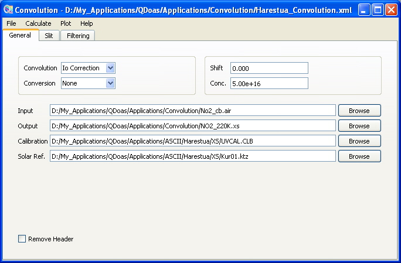

QDOAS Convolution/Filtering Tool : General page

QDOAS supports standard convolution and convolution with I0 correction. The convolution integral is calculated using the method of trapezes. If None is selected, the cross-section is just interpolated on the final grid.
Before the convolution, it is possible to convert the original wavelength calibration of the input cross-section file from the air to the vacuum or inversely, from the vacuum to the air.
| Input | the name of the high resolution cross-section file to interpolate or convolve; |
| Output | the name of the resulting interpolated or convolved cross-section file; |
| Calibration | the final grid on which the original cross-section (input file) must be interpolated or convolved; |
| Solar Ref | the high-resolution solar spectrum requested only if the convolution with I0 correction is selected; |
The format of input and output files is described in the Annex of the QDOAS Software User Manual. The resulting cross-section file can be used as input for the retrieval. It is then better to give the name of the output file in the format imposed by QDOAS : cross-section files names must imperatively start with the symbol name as prefix followed by the underscore character !
Shifting the convolved cross-section
A shift in nm can be applied to the convolved cross-section. In order to avoid interpolation after convolution, this shift is applied on the calibration grid before convolution.
Convolution with I0 correction
The fields Solar Ref. and Conc are respectively the name of the high resolution solar spectrum file and the scaling column density of the concerned molecule. Both are used for calculating the synthetic optical density in the formula of I0 correction convolution. These fields are ignored if I0 correction is not used.